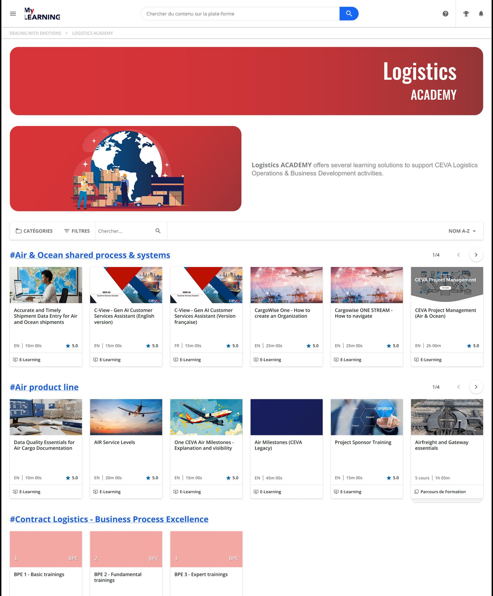
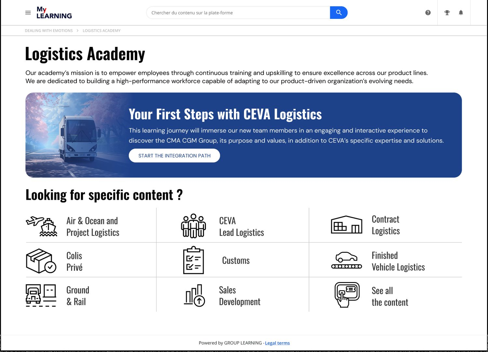
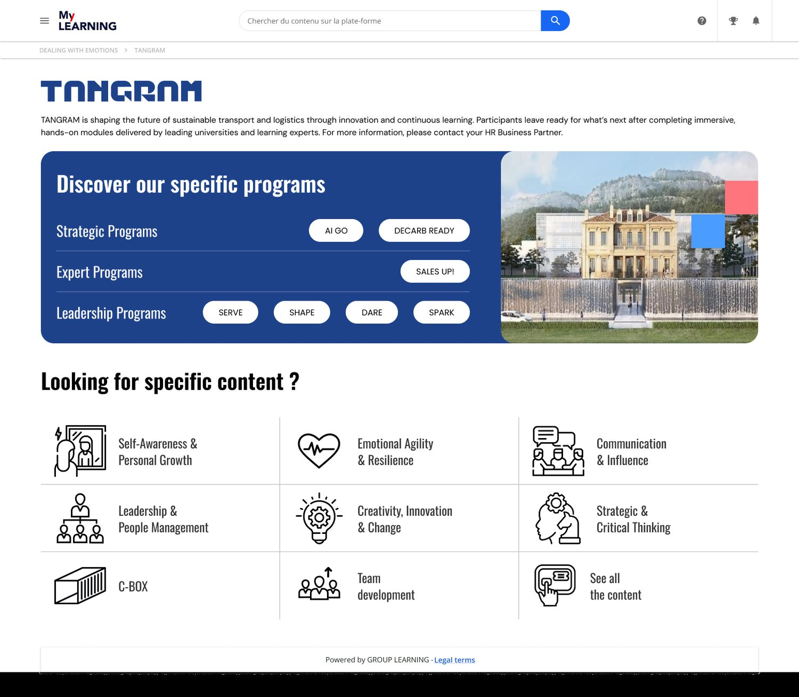

Concevoir deux expériences d'apprentissage distinctes sur une plateforme SaaS imposée et rigide (Docebo), tout en rendant les équipes métiers autonomes dans la création de contenu via un système de design scalable.
CMA CGM
Product Designer Senior
(LMS, Design System, Architecture de l'information)
SaaS B2B / LMS interne
Équipes Learning (RH)
Managers formation
L'entreprise devait lancer simultanément la Logistics Academy (formation opérationnelle, intégration des collaborateurs) et Tangram (programmes stratégiques, leadership, intelligence artificielle).
L'utilisation obligatoire de Docebo, un LMS standardisé dont la structure native impose une navigation par carrousels horizontaux et limite fortement la personnalisation visuelle.
L'interface par défaut générait une surcharge cognitive (excès de tags, listes de cours non hiérarchisées). Les utilisateurs peinaient à identifier les parcours critiques, réduisant la découvrabilité globale de l'offre de formation.

Le projet est parti d'un constat porté par le responsable de la plateforme et du service de formation interne.
Pour le responsable de la plateforme, l'ensemble manquait de cohérence et la navigation était floue. C'est ce constat, plus qu'un brief de design, qui a cadré la mission.
Avant de dessiner, cadrage avec notre développeur sur ce que la plateforme permettait et sur ses contraintes, pour ne proposer que ce qui pouvait se déployer.
De ce cadrage est née la proposition de gabarits : contourner les limites natives sans développement spécifique coûteux.
Pour éviter des développements spécifiques coûteux et contourner les limites natives de l'outil, l'approche s'est concentrée sur l'architecture de l'information et la création d'un système de gabarits.
L'enjeu : Réduire le temps de recherche pour les profils opérationnels.
La solution : Abandon de la logique de catalogue au profit d'une interface orientée "wayfinding". Mise en place d'une navigation par tuiles iconographiques claires pour un accès direct aux catégories métiers (Air & Ocean, Customs, etc.) et mise en évidence du parcours d'intégration (First Steps).


L'enjeu : Valoriser une offre premium destinée aux top-managers.
La solution : Création d'une mise en page asymétrique dès le hero header, structurant les programmes par grands piliers stratégiques pour marquer une rupture visuelle avec le standard de l'entreprise.
Pour soutenir cette architecture hybride et anticiper la scalabilité du produit (multi-branding, adaptation des thèmes), le système a été modélisé sur Figma en privilégiant la maintenabilité.
Déploiement d'un système hiérarchisé à plusieurs niveaux (Primitives brutes vs. variables Sémantiques) pour centraliser la gestion visuelle. Cette séparation stricte entre la valeur (ex : #1A3B85) et sa fonction (ex : Surface/page ou Text/link) permet de basculer instantanément d'un environnement de marque à l'autre sans casser l'interface.
Rationalisation drastique de la librairie via une utilisation avancée des Component Properties (Booleans, Instance swaps, Text). L'objectif : éviter la multiplication des variantes visuelles inutiles, garantir un fichier léger et performant, et réduire la courbe d'apprentissage pour la manipulation des composants.
Conception du design system, puis maquettage des pages des deux académies à partir des gabarits.
Livraison des maquettes et des composants, traduits en gabarits HTML/CSS directement injectables dans les champs natifs de la plateforme.
Recette de l'intégration sur la plateforme avant la mise à disposition des équipes Learning.
En parallèle des maquettes, les composants ont été traduits en gabarits HTML/CSS directement injectables dans les champs de texte natifs de Docebo.
Ce système a permis d'industrialiser le déploiement. Les équipes Learning (RH) utilisent désormais ces modules pour créer de nouvelles pages d'académies de manière 100% autonome, sans intervention requise du design ou de l'IT.
Cohabitation réussie de deux environnements visuellement et ergonomiquement distincts sur un socle technique unique.
Face à un LMS rigide, l'architecture de l'information et un système de gabarits apportent plus de cohérence qu'une personnalisation visuelle impossible.
Connaître les limites de la plateforme dès le départ évite de proposer ce qui ne se déploiera pas, et garde le budget pour ce qui compte.
Un design system n'a de valeur que si les équipes s'en servent sans nous. Les gabarits injectables ont rendu les équipes Learning autonomes.